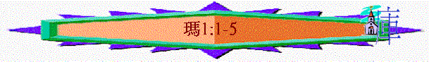

|
信 仰 的 喚 醒 |
||||||||||||
|
引 言 |
在關係上神愛他們 |
在事奉上藐視神 |
在盟約上不忠貞 |
在言語上煩瑣神 |
在奉獻上奪供物 |
在話語上頂撞神 |
||||||
|
1:1 |
1:2-5 |
1:6-2:9 |
2:10-16 |
2:17-3:6 |
3:7-12 |
3:13-4:6 |
||||||
Ａ）引言
１）作者－瑪拉基（我的使者）
－出生，歷史，何人？但最重要的是【耶和華藉瑪拉基傳給以色列的默示】
２）對像【以色列】，【眾祭司阿】（２：１）
３）時間－？
ａ）【．．．．你在何事上愛我們呢】（１：２）
ｂ）【以東人說，我們淚在雖被毀滅】（１：４）
ｃ）【藐視我名的祭司啊．．．．】（１：６）
ｄ）【．．．．你獻給你的省長．．．．】（１：８）
ｅ）【甚願你們中間有一人關上殿門，免得你們娉然在我壇上燒火．．．．】 （１：１０）
ｆ）【．．．．娶事奉外邦神的女子為妻】（２：１１）
ｇ）【．．．．我必差遣先知以利亞到你們那裏去】（４：５）
４）中心－信仰的喚醒（１：２、６ ２：１３－１４、１７ ３：７－８、１３）
５）大網－參考大網表
Ｂ）內容（１：２－４：６）
一）在關係上－神愛他們（１：２－５）
１）喚醒－【我曾愛你們】
＊獨特之處：放在內容第一句中，為什麼？
２）不知－【你在何事上愛我們？】
＊為何不知？
ａ）日子久了
ｂ）感覺不到
ｃ）現在看不見
３）講解
ａ）神的話語
ｂ）神的揀選
ｉ）希奇的揀選
ｉｉ）事實的分別